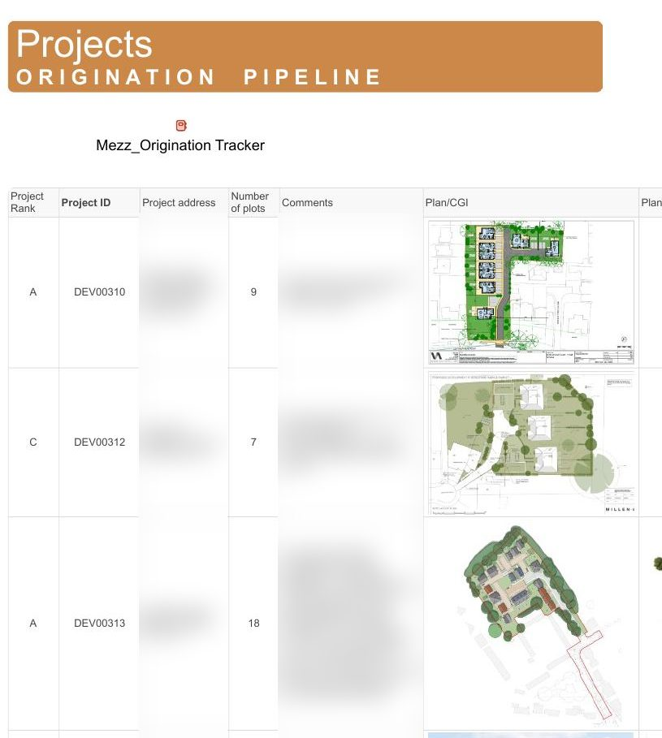

01 · Development finance · 2024 – present
SmartEquity — one platform for 200+ development projects
InDome Capital, UK. Project analysis, due diligence and investor reporting lived in separate spreadsheets and inboxes; every deal was analysed from scratch.
- Built
- A Smartsheet-based platform covering the whole lifecycle, Origination → Delivery → Exit: origination register with automated appraisal and indicative term sheet; a data-collection system for delivery: a separate sheet per project for the budget, the work programme (with conditions tracker) and risks, plus registers for marketing plan, minutes and lessons learnt, all rolled up through reports into one dashboard that shows the overall health of the project; exit calculations (actual profit, redemption, buy-to-let scenario); investor dashboards and reports assembled from project data. The system is not only for internal use: developers run their projects in it, estate agents keep the marketing plan and price control, banks see the financial reporting, and investors get the same live dashboard, so every party works in one platform on one set of data. I am the author of the system: designed and built from scratch as Head of Operations, reporting to the owner; three project managers now run their projects in it.
- Result
- 200+ projects in origination and 10 in delivery, £20M+ of projects on the platform. Project analysis 2–3 h → 40 min; at 1–2 analyses a day that frees roughly 30–100 hours of project-manager time a month (estimate). Investor report 1 h → 10 min. One source of truth for monitoring and reporting across the company.
